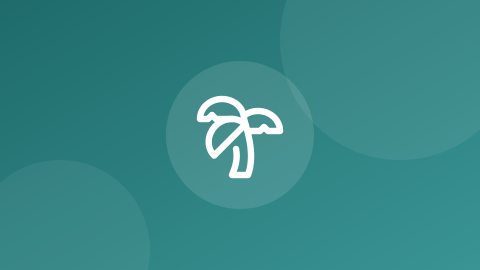
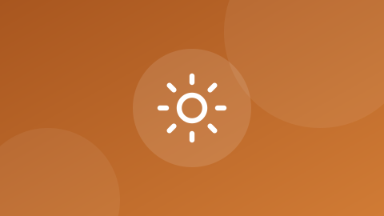

Se préparer en outre-mer : les risques et le kit, territoire par territoire
Cyclones, séismes, éruptions volcaniques, tsunamis, fortes pluies ou coupures d'eau : les risques varient selon les territoires d'outre-mer. Consultez les informations relatives à votre territoire pour connaître les risques locaux, les adaptations utiles du kit et les canaux officiels d'alerte (préfecture, Météo-France, FR-Alert).

Informations pratiques, sources officielles (guide « Tous responsables » (SGDSN, 2025) et sites officiels). Elles ne remplacent pas les consignes des autorités. En cas d'urgence, appelez le 112 et suivez les consignes de la préfecture, de la radio et de FR-Alert.
Tous les guides : préparation outre-mer
Cyclones, séismes, volcans : ce qui change dans le kit selon votre territoire.


 GuyaneKit d'urgence 72 h en Guyane : fortes pluies, inondations, coupures d'eau et d'électricité.
GuyaneKit d'urgence 72 h en Guyane : fortes pluies, inondations, coupures d'eau et d'électricité. La RéunionKit 72 h à La Réunion : saison cyclonique de novembre à avril, Piton de la Fournaise, séismes, inondations.
La RéunionKit 72 h à La Réunion : saison cyclonique de novembre à avril, Piton de la Fournaise, séismes, inondations.

Saint-Martin et Saint-BarthélemyKit d'urgence 72 h pour Saint-Martin et Saint-Barthélemy : cyclones violents (Irma 2017), séismes, tsunamis…Questions fréquentes
Quand se termine la saison cyclonique aux Antilles ?
Dans l'Atlantique Nord et aux Antilles, la saison cyclonique s'étend officiellement du 1er juin au 30 novembre selon Météo-France. Préparez votre kit avant le début de la saison.
Faut-il plus d'eau en outre-mer ?
Le repère de base est d'au moins 6 litres d'eau potable par personne sur 3 jours (2 litres par jour), à augmenter en cas de forte chaleur ou de contraintes d'approvisionnement locales.
À lire aussi
 Test : suis-je prêt ?10 questions pour savoir si votre foyer est prêt à tenir 72 heures : eau, nourriture, santé, papiers, alerte. Votre niveau et 3 actions prioritaires, gratuit.
Test : suis-je prêt ?10 questions pour savoir si votre foyer est prêt à tenir 72 heures : eau, nourriture, santé, papiers, alerte. Votre niveau et 3 actions prioritaires, gratuit. Kit de survie 72 h : la listeListe complète du kit d’urgence 72h du gouvernement : eau, nourriture, radio, trousse… Version claire + checklist interactive gratuite adaptée à votre foyer.
Kit de survie 72 h : la listeListe complète du kit d’urgence 72h du gouvernement : eau, nourriture, radio, trousse… Version claire + checklist interactive gratuite adaptée à votre foyer.